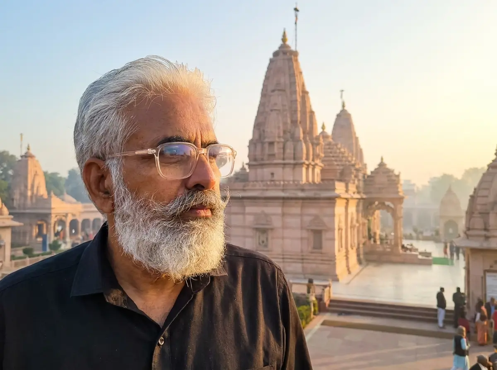

Holi (Dhulandi): Monday, 22 March 2027
Holika Dahan: Sunday, 21 March 2027
Lathmar Holi, Barsana: expected around 16 March 2027
Phoolon ki Holi, Vrindavan: expected around 18 March 2027
From Agra: Mathura about 60 km, Vrindavan about 70 km
Cab: book early; Holi-week fare confirmed on WhatsApp
Holi in the rest of India is one day. In Braj, the land of Krishna, it runs for more than a week and moves from town to town. People come from all over the world for it. It is joyful, and it is also crowded, loud and messy. Both things are true, so this guide gives you both.
Padma Shree Travels drives from Agra to Mathura, Vrindavan and Barsana all year, including Holi week. Cars fill up early for these dates. WhatsApp +91 87200 81102.
The main festival dates are fixed by the calendar. The local events below follow the same lunar dates every year, but the district administration confirms the final schedule only a few weeks before. Treat these as expected dates and check again before you travel.
| Expected date (2027) | Event | Where |
|---|---|---|
| 15 March | Laddu Holi | Barsana |
| 16 March | Lathmar Holi | Barsana |
| 17 March | Lathmar Holi | Nandgaon |
| 18 March | Phoolon ki Holi (Holi with flowers), Rangbhari Ekadashi | Banke Bihari temple, Vrindavan |
| 21 March | Holika Dahan | Across Braj |
| 22 March | Holi (Dhulandi) | Mathura and Vrindavan |
| 23 March | Dauji ka Huranga | Baldeo, near Mathura |
Barsana is Radha's village. In the old tradition, the men of Nandgaon come to tease the women of Barsana, and the women chase them off with sticks while the men protect themselves with shields. It is playful, and it draws the biggest crowd of the week. The lanes are narrow and completely full by late morning.
At Banke Bihari temple, priests shower flower petals on devotees. It lasts only a short while and the temple is packed well before it starts. From this day on, colours are played in Vrindavan's lanes every day until Holi.
On the main day, the celebration centres on Dwarkadhish temple and Vishram Ghat in the morning. It is over by early afternoon.
If that sounds like too much, come in the days before Holi and visit the temples early in the morning. You get the atmosphere with much less of the crush.
Staying in Agra and driving up for the day works well, because hotels in Vrindavan and Mathura fill early and cost more in Holi week. Mathura is about 60 km from Agra and Vrindavan about 70 km. Barsana is roughly 45 km beyond Vrindavan.
Leave early. A 5:00 to 5:30 AM pickup gets you parked before the roads are closed. Plan to start back by early afternoon, when the celebrations wind down and the traffic begins.
On normal days our Mathura and Vrindavan day tour is ₹3,000 and the tour with Barsana is ₹3,500 in an AC sedan. For Holi week, message us for the fare and availability on your date. We would rather confirm it in writing than have you assume.
During Holi week, do not try to cover Barsana, Vrindavan and Mathura in one day the way you can in other months. Road closures make it slow. Pick the one event you most want to see and build the day around it.
Come two or three weeks before or after. The same temples are calm, and darshan is easy. Our Mathura Vrindavan travel guide and Vrindavan temples guide cover an ordinary day.
Holi (Dhulandi) is on Monday, 22 March 2027, and Holika Dahan is on Sunday, 21 March 2027. Celebrations in Braj start about a week earlier, with Lathmar Holi in Barsana expected around 16 March and Phoolon ki Holi in Vrindavan expected around 18 March. Local event dates are confirmed by the administration closer to the festival.
Lathmar Holi in Barsana is expected around 16 March 2027, with Laddu Holi the day before and Lathmar Holi in Nandgaon the day after. Confirm the final date before travelling, because the official schedule is announced only a few weeks ahead.
Many families and foreign visitors attend every year. The crowds are very dense and colour is thrown on everyone, so it is not well suited to small children or elderly travellers. Going in a group, visiting in the morning and leaving by early afternoon makes the day more comfortable.
Mathura is about 60 km and Vrindavan about 70 km from Agra, 1.5 to 2 hours by private taxi. During Holi week, leave Agra by 5:00 to 5:30 AM, because roads near the temples are barricaded later in the morning and the last stretch is on foot or by e-rickshaw.
Not comfortably. Road closures and crowds make travel between the towns slow during Holi week. It is better to choose one event per day, such as Lathmar Holi in Barsana or Phoolon ki Holi in Vrindavan.
Fixed fare in writing · Early-morning pickups · Driver details before pickup